O Alliance Manager permite que os líderes rastreiem registros de MVP para Eventos Padrão, Xadrez da Aliança e Batalha das Ruínas.
Atualmente, essas são as três categorias disponíveis para rastreamento, sendo o uso opcional.
Os líderes podem adicionar registros para seus membros, e o bot acompanhará o histórico de MVP de cada membro em cada categoria.
Isso permite que os líderes vejam facilmente quem foi eleito MVP na aliança mais recentemente, auxiliando na votação do próximo evento.
Também está disponível um recurso de bloqueio para membros que desejam não participar das votações de MVP e/ou por outros motivos pessoais. O bloqueio pode ser aplicado a qualquer membro, e o nome dele não aparecerá na lista de seleção ao registrar dados.
Para registrar um novo MVP, use o comando "/editmvp"
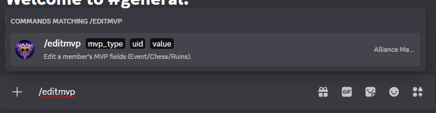
Após digitar o comando, a primeira pergunta refere-se ao tipo de evento; em seguida, seleciona-se o membro e, por fim, insere-se a data da votação.
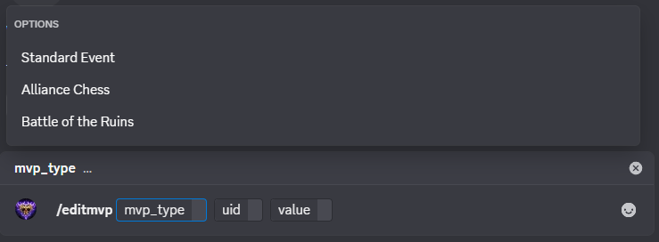
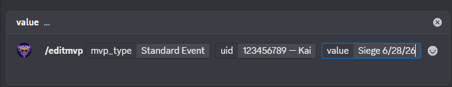
Depois de inserir as informações e enviar a mensagem, uma mensagem de confirmação será exibida.
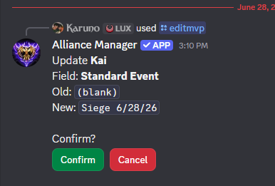
O resultado final é exibido em um formato adequado para publicação em um canal de anúncios de MVP.
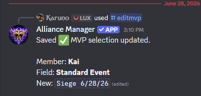
Use o comando "/blockmvp" para impedir que um membro seja selecionado como MVP. Você inserirá as informações do jogador e também poderá adicionar uma observação.
Observação: isso não bloqueia o membro para você no Discord. Isso serve apenas para evitar possíveis erros ao escolher um MVP.
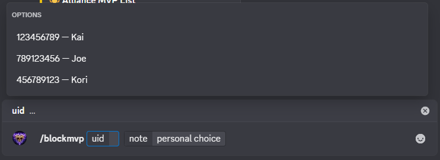
Após inserir as informações e enviar a mensagem, uma mensagem de confirmação aparecerá.
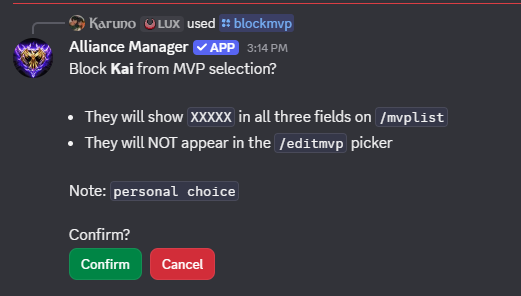
A confirmação final é exibida.
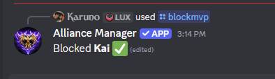
Para visualizar a lista de membros bloqueados, use o comando "/blockedlist".
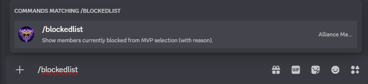
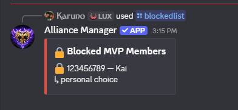
Uma demonstração de como um jogador "bloqueado" aparece ao usar o comando /mvplist.
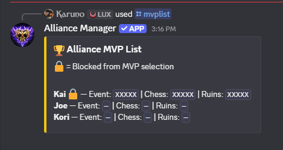
Para visualizar a lista de registros de MVP, use o comando "/mvplist".
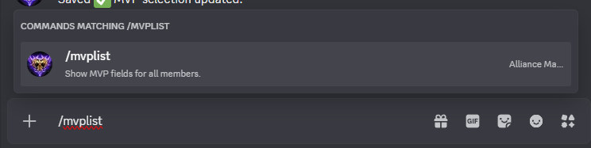
Exibe a lista de registros de MVP.
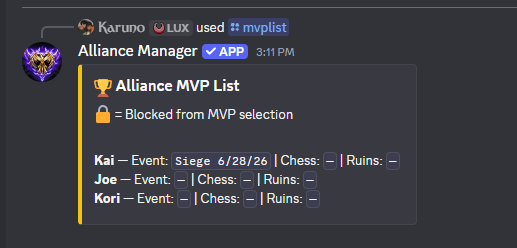
Para limpar os registros de MVP de todos os membros em uma categoria específica, use o comando "/resetmvp". Isso removerá todos os registros dessa categoria e a ação não poderá ser desfeita; portanto, use com cautela e certifique-se de utilizar arquivos de backup, se necessário.
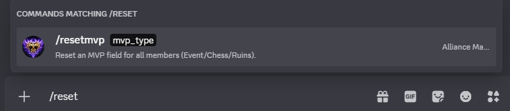
Após inserir o comando, selecione a categoria a ser redefinida.
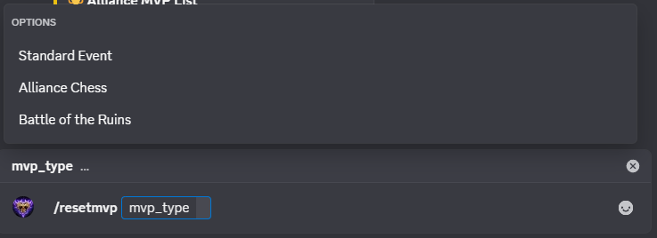
Depois de selecionar a categoria, uma mensagem de confirmação aparecerá.
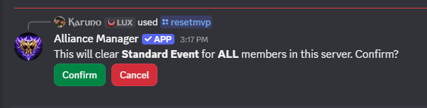
Após a confirmação, a mensagem final será exibida, confirmando a redefinição daquela categoria.
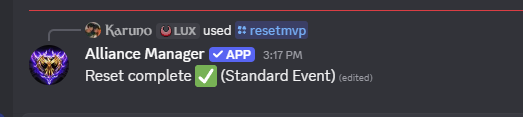
Use o comando "/unblockmvp" para desbloquear um membro das seleções de MVP. Você deverá inserir as informações do jogador.
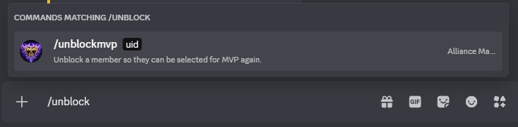
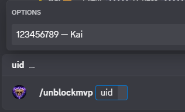
Após inserir as informações e enviar a mensagem, uma mensagem de confirmação aparecerá.
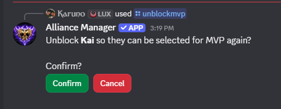
A confirmação final é exibida.
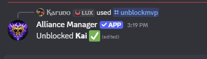
Observações adicionais dos testes:
Caso existam registros inseridos para um jogador e você decida bloqueá-lo, os registros permanecerão armazenados, mas não aparecerão na lista de MVP. No entanto, esses registros desaparecerão se um comando de redefinição for utilizado.
Se a redefinição não for utilizada e o jogador for desbloqueado, esteja preparado para que esses registros antigos apareçam na próxima vez que a lista de MVP for consultada.
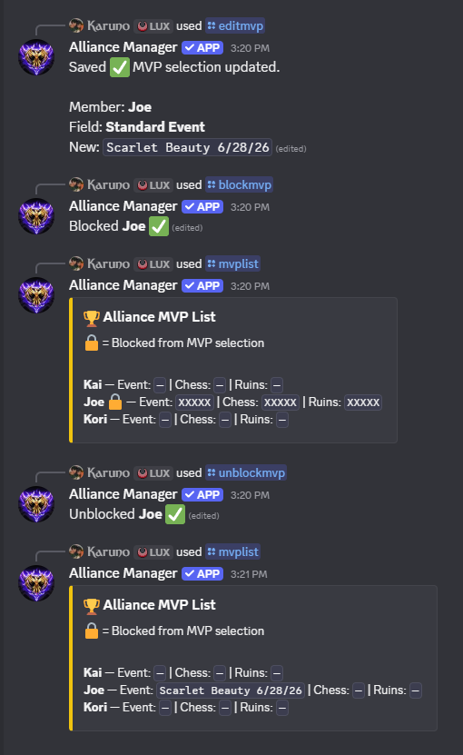
← Voltar para a página inicial